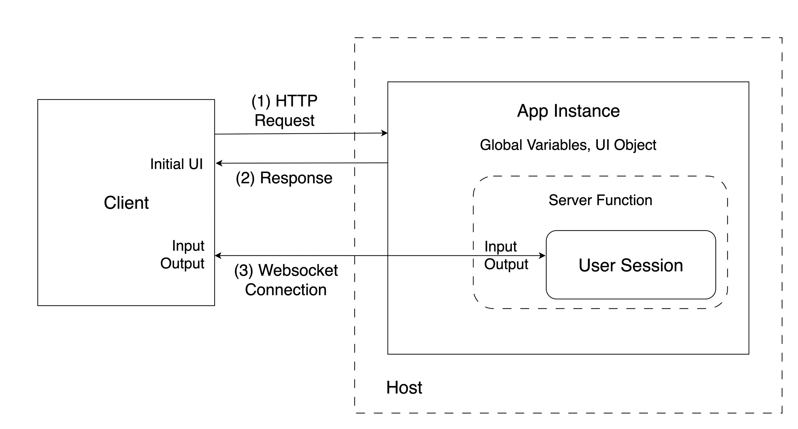

Chapter 5 Developing Shiny Apps
Prior chapters have covered setting up the computing environment with the right tools for your journey to host and share Shiny applications. In this chapter, we will cover getting started with developing in Shiny using R and Python environments. We discuss the tools commonly used for these programming languages and provide instructions on how to run our example Shiny application projects in an integrated development environment (IDE). Then we’ll review some of the easiest ways of sharing the Shiny apps.
If you already have your Shiny app up and running, you may wish to skip to Chapter 7 to get started with learning how to distribute your Shiny app.
Shiny apps can be written in two languages, R and Python. These 2 programming languages are commonly used for data analysis. R is an interpreted language for statistical computing and graphics. Likewise, Python is an interpreted general programming language that is often used for data science. Both R and Python run on a wide variety of operating systems including Windows, Mac OS X, and Linux.
5.1 Creating a Shiny App
A Shiny app is made up of the user interface (UI) and the server function. The UI and the server can be written in pure R or Python, but it can also incorporate JavaScript, CSS, HTML, or Markdown code.
The app is served to the client (app user) through a host (Internet Protocol or IP address) and port number. The server then keeps a websocket connection open to receive requests. The Shiny session behind the app will make sure this request translates into the desired interactivity and sends back the response, usually an updated object, like a plot or a table (Fig. 5.1).

Figure 5.1: Shiny app architecture life cycle; the HTTP request initiates the user session and a websocket connection is established between the client and the host.
The Old Faithful app is a relatively simple example that is concise enough to demonstrate the structure of Shiny apps with the basics of reactivity. It draws a histogram based on the Old Faithful geyser waiting times in the Yellowstone National Park. The number of bins in the histogram can be changed by the user with a slider.
The source code for the different builds of the Old Faithful Shiny app is at
https://github.com/h10y/faithful/. You can download the GitHub repository
as a zip file from GitHub, or clone the repository with
git clone https://github.com/h10y/faithful.git. The repository should be
inside the faithful folder. We’ll refer to the files inside the folder
using relative paths. You can either open these files, or follow the
instructions for creating the folders and files fresh.
5.1.1 R
An R app is based around a UI object and a server function. First we explain how to run a basic app consisting of a UI object and server function, followed by explaining the UI object and server function.
Running in R
To run this app in R, create a folder called r-shiny with a new file called
app.R inside the folder. Put this inside the file:
# r-shiny/app.R
library(shiny)
x <- faithful$waiting
app_ui <- fixedPage(
title = "Old Faithful",
h2("Old Faithful"),
plotOutput(outputId = "histogram"),
sliderInput(
inputId = "n",
label = "Number of bins:",
min = 1,
max = 50,
value = 25,
ticks = TRUE
)
)
server <- function(input, output, session) {
output$histogram <- renderPlot(
alt = "Histogram of waiting times",
{
hist(
x,
breaks = seq(min(x), max(x),
length.out = input$n + 1
),
freq = TRUE,
col = "#BB74DB",
border = "white",
main = "Histogram of waiting times",
xlab = "Waiting time to next eruption [mins]",
ylab = "Frequency"
)
box()
}
)
}
shinyApp(ui = app_ui, server = server)Shiny R User Interface
The user interface (UI) object controls the layout and appearance of the Shiny app.
The UI in R is defined as and object called app_ui:
app_ui <- fixedPage(
title = "Old Faithful",
h2("Old Faithful"),
plotOutput(outputId = "histogram"),
sliderInput(
inputId = "n",
label = "Number of bins:",
min = 1,
max = 50,
value = 25,
ticks = TRUE
)
)The fixedPage() function renders the main Shiny interface, a
plot output is nested inside of it alongside the range slider input. The
slider with the ID "n" controls the number of bins in the histogram
(ranging between 1 and 50, initial value set to 25). The plot with ID
"histogram" will show the distribution of the waiting times.
If we print the app_ui object, we get the following (slightly edited) HTML
output where you can see how the attributes from the R code translate to
arguments in the HTML version:
<div class="container">
<h2>
Old Faithful
</h2>
<div id="histogram">
</div>
<div class="form-group shiny-input-container">
<label
class="control-label"
id="n-label"
for="n">
Number of bins:
</label>
<input
class="js-range-slider"
id="n"
data-min="1"
data-max="50"
data-from="25"
data-step="1"
data-grid="true"/>
</div>
</div>The <div> HTML tag stands for division, and most opening tags are followed
by a closing tag, i.e. </div>. HTML defines a nested structure.
You can see the outermost division with the container class.
The second level header, the plot and the slider are nested inside this outermost division.
This HTML snippet is going to be added to the body of the HTML page rendered by Shiny. The final HTML page will also contain all the JavaScript and CSS dependencies required to make the app interactive and styled properly.
R Server Function
The server function contains the instructions for the reactivity needed
for the Shiny app. The server function takes mainly two arguments: input and
output. Sometimes the server function also takes session. These reactive objects are created
by Shiny and passed to the server function.
input is used to pass the control values, in this case, input$n,
the number of histogram bins:
server <- function(input, output, session) {
output$histogram <- renderPlot(
alt = "Histogram of waiting times",
{
hist(
x,
breaks = seq(min(x), max(x),
length.out = input$n + 1
),
freq = TRUE,
col = "#BB74DB",
border = "white",
main = "Histogram of waiting times",
xlab = "Waiting time to next eruption [mins]",
ylab = "Frequency"
)
box()
}
)
}The output object contains the reactive output objects, in our case the
rendered plot. input and output together describe the state of the
app. Changes in input (input$n here) will invalidate reactive objects that
reference these reactive dependencies
and cause the relevant render functions (renderPlot() here) to re-execute.
5.1.2 Python
In Python, a basic Shiny application consists of two key components: a user interface (UI) object and a server function that handles user input and output. The architecture of a Python Shiny application is similar to an R Shiny application that also has a UI object and server function.
This section explains how a basic Python Shiny application works using the Old Faithful app. We start by demonstrating how to set up the application. After that, we will explore the UI object and the server function next.
Running in Python
In the py-shiny folder of the Old Faithful app, you will see a file called
called app.py with the following code:
# py-shiny/app.py
import seaborn as sns
import matplotlib.pyplot as plt
from shiny import App, render, ui
faithful = sns.load_dataset("geyser")
x = faithful.waiting
app_ui = ui.page_fixed(
ui.panel_title("Old Faithful"),
ui.output_plot(id = "histogram"),
ui.input_slider(
id="n",
label="Number of bins:",
min=1,
max=50,
value=25,
ticks=True
),
)
def server(input, output, session):
@render.plot(alt="Histogram of waiting times")
def histogram():
plt.hist(
x,
bins = input.n(),
density=False,
color="#BB74DB",
edgecolor="white")
plt.title("Histogram of waiting times")
plt.xlabel("Waiting time to next eruption [mins]")
plt.ylabel("Frequency")
app = App(ui = app_ui, server = server)As well, inside the py-shiny folder, there is a file named requirements.txt which contains
the Python dependencies needed to run the application.
To install the Python dependencies from the requirements.txt file, run one from inside the py-shiny
folder: pip install -r requirements.txt which installs the shiny package
as a framework for the app, seaborn library to load the dataset, and the matplotlib library
installed to visualize the geyser data set with a histogram.
Here are the contents of the requirements.txt file containing the dependencies we need:
# py-shiny/requirements.txt
shiny>=0.10.2
matplotlib
seabornOnce all the dependencies are installed, you can run the from inside the folder the command
shiny run --reload --port 8080 and visit http://localhost:8080 to view the app.
In the next 2 sections, we will explore the user interface and server function.
Shiny Python User Interface
The Python UI uses the ui object imported from shiny.
Each of its properties ie the snake case naming convention
(e.g. page_fixed, output_plot, and
input_slider).
Below is the code of the ui object taken from app.py of the Old Faithful app.
app_ui = ui.page_fixed(
ui.panel_title("Old Faithful"),
ui.output_plot(id = "histogram"),
ui.input_slider(
id="n",
label="Number of bins:",
min=1,
max=50,
value=25,
ticks=True
),
)Printing the app_ui in Python gives the following (slightly edited) HTML output:
<html>
<head>
</head>
<body>
<div class="container">
<h2>
Old Faithful
</h2>
<div id="histogram">
</div>
<div class="form-group shiny-input-container">
<label
class="control-label"
id="n-label" for="n">
Number of bins:
</label>
<input
class="js-range-slider"
id="n"
data-min="1"
data-max="50"
data-from="25"
data-step="1"
data-grid="true"/>
</div>
</div>
</body>
</html>As you can see, the attributes from the Python code translate to HTML element blocks.
You can see how ui.panel_title("Old Faithful") becomes Old Faithful
enclosed into h2 tags.
You can also see how ui.output_plot(id = "histogram") becomes a div element
with the id histogram. At runtime, Shiny will use the div element
with the id histogram to render a plot.
In Python all of these element blocks are enclosed within a <html> and <body>
tag so that it can be recognized and rendered by the web browser.
Python Server Function
The server function manages the reactivity for the
front end of the Shiny app. The server function takes mainly two arguments: input and
output. Sometimes the server function also takes session.
These reactive objects are created by Shiny and passed to the server function.
The server function is responsible for managing the reactivity of the
Shiny app’s front end. It primarily accepts two arguments: input and output, although
it may also include a session argument in cases when you would like to access data in a session.
These reactive objects are generated by Shiny and are subsequently
passed to the server function for processing.
Below is the code for the server taken from app.py of the Old Faithful app.
def server(input, output, session):
@render.plot(alt="Histogram of waiting times")
def histogram():
plt.hist(
x,
bins = input.n(),
density=False,
color="#BB74DB",
edgecolor="white")
plt.title("Histogram of waiting times")
plt.xlabel("Waiting time to next eruption [mins]")
plt.ylabel("Frequency")The input object stores reactive values. For example, input.n() means that
when a reactive value input.n() is changed, a reactive function that uses
input.n() will be triggered to rerender. The reactive function for input.n()
in the Python code is histogram which is made reactive with the render.plot
Python decorator.
Python decorators are a design pattern to modify a function by wrapping a
function into another function. For example, the @render.plot decorator is a
function that wraps the histogram function making it a reactive expression.
The histogram function creates a plot, and the @render.plot attempts to
retrieve the created plot by the histogram and renders it as histogram
to the output object that can be called by a Shiny ui object. The use of
the output object is similar to R, where reactive output objects such as
histogram are stored.
In short, like R Shiny, input and output together describe the state of the
app. When changes are made to an input, their corresponding reactive
expressions are re-executed and their results are stored in the output object.
Finally, session refers to a connection made by a client to the Shiny
application. A new session with a new websocket connection is created every time
a web browser connects to the Shiny application. It should be noted that code
outside the server function runs once per application startup and not per user
session.
Python Shiny Express
Python for Shiny has two different syntax options, Shiny Core that you saw in the previous sections, and Shiny Express. Shiny Core drew inspiration from the original Shiny for R framework, but is not a literal port of Shiny for R. Shiny Express was introduced quite recently, and is focused on making it easier for beginners to use Shiny, and might feel more natural to Python users.
Shiny Core offers the separation between the UI and the server components, making it easier to organize code for larger Shiny apps. The server function declaration also helps separating code that should only run at startup vs. for each session. In Shiny Express, all of the code in the app file is executed for each session.
There is only one Shiny syntax option in R.
5.2 The Shiny App Lifecycle
The traditional way of serving Shiny apps involves a server that runs an R or Python process, and each client connects to this server and keeps an open websocket connection during an application’s session. Understanding sessions is important to know when deploying your application as you may need to manage different user sessions that request different reactive functions to run and you don’t want it to leak into other user sessions. Let’s take a closer look at this to better understand what is happening under the hood.
5.2.1 Connections
Shiny for R relies on the httpuv (Cheng et al. 2024) package to handle connections.
Whenever a new user connects to the Shiny app a new session is started
and communication between the client and the user session will be happening
through the websocket connection. The websocket allows two-way communication
which is the basis of Shiny’s reactivity. The JavaScript code on the client
side can communicate with the R process via this connection.
In Python, the connections are handled by Uvicorn, and the messages – as we saw before – reveal the port numbers used for the different user sessions.
5.2.2 Sessions
Why is this important? Because user sessions having their own ports is the basis for isolating these sessions from one another. Users will not be able so access data from another session, unless data is leaked through the global environment (which should be avoided).
5.2.3 Connections + Sessions
The Shiny app life cycle can be described as follows (Fig. 5.1):
- Server start: after calling
runApp()in R orshiny runfor Python, thehttpuvor Uvicorn server is started and is now listening on a random or a pre-defined port (e.g.8080). - Server ready: the application code is sourced including loading the required libraries, data sets, everything from the global scope; if users try to connect to the app before it is ready they will see an error message.
- Client connects to the app via the port over HTTP protocol.
- New session created: the backend server (
httpuvor Uvicorn) starts a user session and runs the server function inside that session; a websocket connection is created for two-way communication. - Client-server communication happening while the user is using the app: the server sends the rendered HTML content to the client, including the JavaScript code that will communicate with the server to send and receive data through the websocket connection.
- When the client detects that the websocket connection is lost, it will try to reconnect to the server.
- After a certain amount if inactivity, or in the case of disconnected client, the websocket connection and the user session will get terminated and the client browser will “gray out”.
You can find more information about the Shiny app life cycle in Granjon (2022) and J. Coene (2021).
5.2.4 Shinylive
For Shinylive applications, the lifecycle does not include a websocket connection, and relies purely on HTTP(S) between the client and the server. The server will only send the requested resources to the client, and it will not do any other work. It will just “serve” these static files. The client browser will do the heavy lifting by rendering the HTML and running the Web Assembly binary that will take care of the reactivity. Such an application will not time out until the browser tab is closed.
5.3 Organizing Shiny Apps
The previously presented faithful app is organized as a single file.
The file contained all the globally scoped declarations at the top,
the definition of the UI object and the server function, and ended
with the Shiny app object. As Shiny apps grow from demo examples to full on
data science projects, the increased complexity will necessitate the
organization of the code. You can organize the code into multiple files,
or even as a package. Let’s see the most common patterns.
5.3.1 R
Single file
When Shiny is organized in a single file, the convention is to name it app.R.
This way your IDE (RStudio or VS Code) will recognize that it is a Shiny app.
Apart from this convenience, the file can be named anything, e.g. faithful_app.R.
The single file follows the following structure:
# Load libraries
library(shiny)
# Define global variables
x <- [...]
# Define the UI
app_ui <- [...]
# Define the server
server <- function(input, output, session) {
[...]
}
# Assemble the Shiny app
shinyApp(ui = app_ui, server = server)At the end of the file, we define the Shiny app using shinyApp().
To run the app in R, we either have to source the app.R or provide the
file name as an argument to the runApp() function, e.g.
runApp("r-shiny/app.R").
Multiple Files
If your app is a bit more complex, you might have multiple files in
the same directory. By convention, the directory contains at least
a server.R file and ui.R file.
Sometimes, there is a third file called
global.R. The global.R file is used to load packages, data sets,
set variables, or define functions that are available globally.
The directory can also have a www folder inside that can store
assets (files, images, icons). Another folder is called R that can
hold R scripts that are sourced before the app starts up.
This is usually the place to put helper functions and Shiny modules,
which are also functions.
If you prefer, you can use the source() function to explicitly source
files as part of the global.R script. Just don’t put these files in the
R folder to avoid sourcing them twice.
The Bananas Shiny app is organized into multiple files.
The source code for the different builds of the Bananas app is at
https://github.com/h10y/bananas/. Download or clone the GitHub repository with
git clone https://github.com/h10y/bananas.git. The repository should be
inside the bananas folder.
Here is how the folder structure looks like for the R version of the Bananas app:
bananas/r-shiny
├── R
│ └── functions.R
├── bananas-svm.rds
├── bananas.csv
├── dependencies.json
├── global.R
├── server.R
└── ui.RThe global.R file looks like this:
# bananas/r-shiny/global.R
library(shiny)
library(plotly)
library(e1071)
x <- read.csv("bananas.csv")
x$ripeness <- factor(x$ripeness, c("Under", "Ripe", "Very", "Over"))
m <- readRDS("bananas-svm.rds")Apart from loading libraries, we read in a CSV file, set factor levels so that
those print in a meaningful order instead of alphabetical. Finally, we load
the trained model object. There is also the file functions.R in the R
folder that gets sourced automatically.
It is important to note, that functions defined inside the files of the R
folder, or anything that you source() (e.g. source("R/functions.R")) will
be added to the global environment. If you want a sourced file to have
local scope, you can include that for example inside your server function as
source("functions.R", local = TRUE).
To run this app, you can click the Run App button the the IDE
or use runApp("<app-directory>") as long as the directory contains
the server.R and the ui.R files.
The choice between single vs. multiple files comes down to personal preference and the complexity of the Shiny app. You might start with a single file, but as the file gets larger, you might decide to save the pieces into their own files.
Keeping Shiny apps in their own folder is generally a good idea
irrespective of having single or multiple files in the folder. This way,
changing your mind later won’t affect how you run the app. You can just
use the same runApp("<app-directory>") command, if you follow these
basic naming conventions.
Shiny App with Nested File Structure
Your app can grow more complex over time, and you might find the multiple-file structure described above to be limiting. You might have Shiny modules inside Shiny modules. Such a setup might lend itself to a hierarchical file structure.
If this is the case, you can use the Rhino Shiny framework
and the rhino R package (Żyła et al. 2024). This Shiny framework was inspired by
importing and scoping conventions of the Python and JavaScript languages.
Rhino enforces strong conventions using a nested file structure and modularized
R code. Rhino also uses the box package (Rudolph 2024) that defines a hierarchical
and composable module system for R.
Here is the directory structure for the Rhino version of the Faithful app
from inside the Faithful GitHub repository’s r-rhino folder:
r-rhino
├── app
│ ├── main.R
│ └── static
│ └── favicon.ico
├── app.R
├── config.yml
├── dependencies.R
└── rhino.ymlThe app/static folder serves a similar purpose to the www folder.
The R code itself is in the app.R folder, specifically the app/main.R file.
You can see how the import statement is structured at the beginning, and how a
Shiny module is used for the ui and server:
box::use(
shiny[fixedPage, moduleServer, NS, plotOutput, sliderInput,
renderPlot, h2],
graphics[hist, box],
datasets[faithful],
)
x <- faithful$waiting
#' @export
ui <- function(id) {
ns <- NS(id)
fixedPage(
[...]
)
}
#' @export
server <- function(id) {
moduleServer(id, function(input, output, session) {
output$histogram <- renderPlot(
[...]
)
})
}To run this app, you can call shiny::runApp(), the app.R file contains a
single line calling rhino::app() which creates the Shiny app object.
The developers of the framework also released a very similar Python implementation called Tapyr.
Programmatic Cases
In R, if you want to run the Shiny app as part of another function, you
can supply a list with ui and server components (i.e.
runApp(list(ui = app_ui, server = server))) or a Shiny app object
created by the shinyApp() function (i.e.
runApp(shinyApp(ui, server))).
Note that when shinyApp() is used at the R console, the Shiny app object
is automatically passed to the print() function, or more specifically, to the
shiny:::print.shiny.appobj function, which runs the app with runApp().
If shinyApp() is called in the middle of a function, the value will not
be passed to the print method and the app will not be run. That is why you have
to run the app using runApp(). For example, we can write the following
function where app_ui and server are defined above as part of the
single-file faithful Shiny app. The ... passes possible other arguments
to runApp such as the host or port that we will discuss later.
Start the app by typing run_app() into the console.
Shiny App as an R Package
Extension packages are the fundamental building blocks of the R ecosystem.
Apps can be hosted on the Comprehensive R Archive Network (CRAN), on GitHub, etc.
The tooling around R packages makes checking and testing these packages easy.
If you have R installed, you can run R CMD check <package-name> to test your
package that might include a tests folder with unit tests.
Including Shiny apps in R packages is quite commonplace nowadays. These
apps might aid data visualization, or simplify calculations for not-so-technical
users. Sometimes the Shiny app is not the main feature of a package, but rather it is
more like an extension or a demo. In such cases, you might decide
to put the Shiny app into the inst folder of the package. This will make
the app available after installation, but the app’s code will skip any checks.
A consequence is that some dependencies of the app might not be available,
because that is not verified during standard checks. At the time of installation,
the contents of the inst folder will be copied to the package’s root folder.
Therefore, such an app can be started as e.g.
shiny::runApp(system.file("app", package = "faithful")).
This means that there is a package called faithful, and in the inst/app folder
you can find the Shiny app.
The r-package folder of the Faithful repository contains an R package called
faithful. This is the folder structure of the package:
faithful
├── DESCRIPTION
├── LICENSE
├── NAMESPACE
├── R
│ └── run_app.R
├── inst
│ └── app
│ ├── global.R
│ ├── server.R
│ ├── ui.R
│ └── www
│ └── favicon.ico
└── man
└── run_app.RdWe will not teach you how to write an R package. For that, see R’s official
documentation about Writing R Extensions,
or Hadley and Bryan (2023). The most important parts of the R package are the functions
inside the R folder and the DESCRIPTION file, that describes the dependencies
of the package:
Package: faithful
Version: 0.0.1
Title: Old Faithful Shiny App
Author: Peter Solymos
Maintainer: Peter Solymos <[...]>
Description: Old Faithful Shiny app.
Imports: shiny
License: MIT + file LICENSE
Encoding: UTF-8
RoxygenNote: 7.3.1The inst folder contains the Shiny app, the man folder
has the help page for our run_app function. The run_app.R file has the
following content:
#' Run the Shiny App
#'
#' @param ... Arguments passed to `shiny::runApp()`.
#' @export
run_app <- function(...) {
shiny::runApp(system.file("app", package = "faithful"), ...)
}The #' style comments are used to add the documentation next to the function
definition, which describes how other parameters can be passed to the
shiny::runApp function. The @export tag signifies that the run_app function
should be added to the NAMESPACE file by the roxygen2 package (Wickham et al. 2024).
Calling R CMD build faithful from inside the r-package folder will build the faithful_0.0.1.tar.gz source file.
You can install this package using install.packages("faithful_0.0.1.tar.gz", repos = NULL) from R
or you can use the R command line utility: R CMD INSTALL faithful_0.0.1.tar.gz.
Once the package is installed, you can call faithful::run_app() to start the
Old Faithful example.
If you want to include the app as part of the package’s functions, place it in the
package’s R folder. In this case, shiny and all other packages will have to
be mentioned in the package’s DESCRIPTION file, that describes the dependencies,
as packages that the package imports from.
Best practices can be found about writing R packages
(Hadley and Bryan 2023) and about engineering Shiny apps using (Fay et al. 2021).
You can not only test the underlying functions as part of the package, but you
can apply Shiny specific testing tools, like shinytest2 (Schloerke 2024).
An R package provides a structure to follow, and everything becomes
a function. Including Shiny apps in R packages this way is much safer, and this
is the approach that some of the most widely used Shiny development frameworks
took. These are the golem (Fay et al. 2023), and the leprechaun (John Coene 2022)
packages.
Golem
The use and benefits of the Golem framework are described in the book Engineering Production-Grade Shiny Apps by Fay et al. (2021). Golem is an opinionated framework for building a production-ready Shiny apps by providing a series of tools for developing your app, with an emphasis on writing Shiny modules.
A Golem app is contained inside an R package.
You’ll have to know how to build a package, but this is the price to pay for
having mature and trusted tools for testing your package from every aspect.
Let’s review how the Golem structure compares to the previous setup.
Look for the package inside the r-golem folder of the Faithful GitHub repository.
We will call this R package faithfulGolem:
# faithfulGolem
├── DESCRIPTION
├── LICENSE
├── NAMESPACE
├── R
│ ├── app_config.R
│ ├── app_server.R
│ ├── app_ui.R
│ ├── mod_histogram.R
│ └── run_app.R
├── dev
│ ├── 01_start.R
│ ├── 02_dev.R
│ ├── 03_deploy.R
│ └── run_dev.R
├── inst
│ ├── app
│ │ └── www
│ │ └── favicon.ico
│ └── golem-config.yml
└── man
└── run_app.RdThe most important difference is that we see the UI and server added to the
R folder as functions, instead of plain script files in the inst folder.
The dev folder contains development related boilerplate code and
functions to use when testing the package without the need to reinstall after
every tiny change you make to the Shiny app or to the R package in general.
The inst folder has the static content for the app with the www folder
inside.
The DESCRIPTION file looks like this:
Package: faithfulGolem
Title: Old Faithful Shiny App
Version: 0.0.1
Author: Peter Solymos
Maintainer: Peter Solymos <[...]>
Description: Old Faithful Shiny app.
License: MIT + file LICENSE
Imports:
config (>= 0.3.2),
golem (>= 0.4.1),
shiny (>= 1.8.1.1)
Encoding: UTF-8
RoxygenNote: 7.3.1Notice that the config and golem packages are now part of the list of
dependencies with the package versions explicitly mentioned to avoid possible
backwards compatibility issues.
Let’s take a look at the UI and server functions. The app_ui function
returns the UI as a tags list object. You might notice that we use a module UI
function here:
app_ui <- function(request) {
tagList(
# Leave this function for adding external resources
golem_add_external_resources(),
# Your application UI logic
fixedPage(
title = "Old Faithful",
h2("Old Faithful"),
mod_histogram_ui("histogram_1")
)
)
}The app_server function loads the Old Faithful data set and calls the
histogram module’s server function that uses the same "histogram_1"
identified as the module UI function, plus it also takes the data set as
an argument too:
app_server <- function(input, output, session) {
x <- datasets::faithful$waiting
mod_histogram_server("histogram_1", x)
}So what does this module look like? That is what you can find in the
R/mod_histogram.R file that defines the mod_histogram_ui and
mod_histogram_server functions:
mod_histogram_ui <- function(id) {
ns <- NS(id)
tagList(
plotOutput(outputId = ns("histogram")),
sliderInput(
inputId = ns("n"),
label = "Number of bins:",
min = 1,
max = 50,
value = 25,
ticks = TRUE
)
)
}
mod_histogram_server <- function(id, x) {
moduleServer(id, function(input, output, session) {
ns <- session$ns
output$histogram <- renderPlot(
alt = "Histogram of waiting times",
{
graphics::hist(
x,
breaks = seq(min(x), max(x),
length.out = input$n + 1
),
freq = TRUE,
col = "#BB74DB",
border = "white",
main = "Histogram of waiting times",
xlab = "Waiting time to next eruption [mins]",
ylab = "Frequency"
)
graphics::box()
}
)
})
}After building, checking, and installing the faithfulGolem R package,
you’ll be able to start the Shiny app by calling faithfulGolem::run_app() from R.
Leprechaun
The leprechaun R package (John Coene 2022) uses a similar philosophy to
creating Shiny applications as packages. It comes with a full set of
functions that help you with modules, custom CSS, and JavaScript files.
When using this package, you will notice that leprechaun does not become
a dependency in the DESCRIPTION file, unlike in the case of golem.
Apart from this and some organization choices, the two packages and
the workflows provided by them are very similar. Choose that helps you more
in terms of your app’s specific needs.
Say we name the the R package containing the Old Faithful example as
faithfulLeprechaun. This folder is inside the r-leprechaun folder of the
Faithful repository. The main functions that are defined should be already
familiar:
# R/ui.R
ui <- function(req) {
fixedPage(
[...]
)
}
# R/server.R
server <- function(input, output, session) {
x <- datasets::faithful$waiting
output$histogram <- renderPlot(
[...]
)
}
# R/run.R
run <- function(...) {
shinyApp(
ui = ui,
server = server,
...
)
}After the package is installed, the way to run the app is to call
the faithfulLeprechaun::run() function.
5.3.2 Python
Single file
The Python version takes a very similar form as a single file, usually named
as app.py.
# Load libraries
from shiny import App, render, ui
[...]
# Define global variables
x = [...]
# Define the UI
app_ui = [...]
# Define the server
def server(input, output, session):
[...]
# Assemble the Shiny app
app = App(ui = app_ui, server = server)You can run the Python Shiny app in your IDE or by using the shiny run command
in the terminal, shiny run --reload --launch-browser py-shiny/app.py.
This will launch the app in the browser and the server will watch for changes
in the app source code and rerender.
The libraries and global variables will be accessible for all the Shiny sessions
by sourcing the app file when you start the Shiny app.
Variables defined inside the server functions will be defined for each
session. This way, one user’s changes of the slider won’t affect the other
user’s experience. However, if one user changes the globally defined
variables (i.e. using the <<- assignment operator in R), those changes will be
visible in every user’s session.
Multiple Files
The Python version of the Bananas app is also split into multiple files:
bananas/py-shiny
├── app.py
├── bananas-svm.joblib
├── bananas.csv
├── functions.py
└── requirements.txtSeparating files works slightly differently in Python. Instead of sourcing scripts
inline like you saw for R, you must import the objects and variables from
separated files similar to importing from libraries as Python considers a .py
file as a “module”.
These are the first few lines of the app.py file:
We import objects from shiny, then import everything from the functions.py
file into the functions namespace which is used to define plotting helper functions.
To call anything that appeared in the functions.py in app.py, we prepend functions. to any functions or objects in functions.py:
# bananas/py-shiny/app.py
[...]
ternary = functions.go.FigureWidget(
data=[
functions.trace_fun(
x[x.ripeness == "Under"], "#576a26", "Under"
),
functions.trace_fun(
x[x.ripeness == "Ripe"], "#eece5a", "Ripe"
),
functions.trace_fun(
x[x.ripeness == "Very"], "#966521", "Very"
),
functions.trace_fun(
x[x.ripeness == "Over"], "#261d19", "Over"
),
functions.trace_fun(pd.DataFrame([{
[...]To run a Python Shiny app that is in multiple files, you still need to
specify the file that has the Shiny app object defined that you want to run,
shiny run <app-directory>/app.py. Or if the file is called app.py and the
app object is called app, you can use shiny run from the current
working directory.
As Shiny for Python apps become more widespread in the future, we will see many different patterns emerge with best practices for organizing files.
5.4 Shinylive
Using Shinylive, you can run Shiny applications entirely in a web browser, i.e. on the client side, without the need for a separate server running in R or Python. This is achieved by R or Python running in the browser. The Python implementation of Shinylive uses WebAssembly (Wasm) and Pyodide. Wasm is a binary format for compiled programs that can run in a web browser, whereas Pyodide is a port of Python and many Python packages compiled to Wasm.
The Shinylive version of the Old Faithful example can be viewed at https://h10y.github.io/faithful/.
5.4.1 Python Shinylive
We will create Python Shinylive version of the Faithful app following
the posit-dev/py-shinylive GitHub repository.
First, export the app inside the py-shiny folder with the single-file app
and put the Shinylive version in the py-shinylive folder:
The Shiny live version will consist of static files, which means that we can copy these files to any static hosting site (like GitHub Pages), and a browser will be able to display the contents irrespective of the underlying operating system, and without the need to have a Python available.
Can we view the output locally? If you double click on the index.html sitting
in the py-shinylive folder, you will most likely get an error in the browser.
To read the error you have to find the developer tools (often opened by
pressing F12 on your keyboard) and check the error messages. You will see
something like this:
Cross-Origin Request Blocked: The Same Origin Policy disallows reading
the remote resource at file:///[...]/shinylive/shinylive.js.
(Reason: CORS request not http).For security reasons, browsers restrict cross-origin HTTP requests initiated from scripts.
But what is this cross-origin resource sharing (CORS)?
If you load the HTML file (like our index.html) from a source, the default CORS
behavior will expect any other files, like images, or JavaScript/CSS scripts
to have the same origin. By origin we mean the domain and subdomain.
Now the problem here is that you are viewing a local version of the files,
which will set the protocol part of the URIs to be file:// instead of
http:// as indicated in the message. Although the folder following the
file protocol is the same, but this is considered as having opaque origins
by most browsers and therefore will be disallowed.
If you want to view the files locally, you do it through a local server.
That way all files are served from the same scheme and domain (localhost)
and have the same origin. Start the server as:
Now visit http://localhost:8000/ in your browser, and the CORS error should
be gone (port 8000 is the default port for http.server).
5.4.2 R Shinylive
Shinylive for R uses similar technology built on WebAssembly using the
WebR R package.
Here is how to create an R Shinylive version of the Faithful app
following the posit-dev/r-shinylive
GitHub repository using the interactive R console:
The first line compiles the Shiny app that is inside the r-shiny folder into
the Shinylive version in the r-shinylive folder.
The second command will start the server and open the page in the browser.
You will see a random port used on localhost, e.g. http://127.0.0.1:7446.
5.5 Dynamic Documents
Dynamic documents stem from the literate programming paradigm (Knuth 1992), where natural language (like English) is interspersed with computer code snippets. Nowadays, dynamic documents are used to create technical reports, slide decks for presentations, and books, like the one you are reading.
Markdown is a common plain-text format for such dynamic documents, because it can be compiled into many different formats using Pandoc. R Markdown builds upon previous literate programming examples, e.g. Sweave that mixes R and (Leisch 2002), and the flexibility provided by Pandoc and the markdown format.
R Markdown contains chunks of embedded R (or other) code between opening
and closing triple backticks. Underneath, you can find the
rmarkdown (Allaire et al. 2024) and knitr (Xie 2024) R packages at work.
A more recent iteration of this idea is Quarto.
Quarto is an open-source scientific and technical publishing system
that can include code chunks in many different formats frequently used by
data scientists, e.g. R, Python, Julia, Observable.
Both R Markdown and Quarto let you to use Shiny inside the documents
to build lightweight apps without worrying too much about a user interface.
Such interactive HTML documents cannot provide the same flexibility for
designing your apps as a standard Shiny app would, but it works wonders for
simpler use cases. Let’s review how you can use Shiny in R Markdown (.Rmd)
and Quarto (.qmd) documents. Check the examples for the Faithful app
at https://github.com/h10y/faithful.
5.5.1 R Markdown
Markdown files usually begin with a header that defines metadata for the
document, like the title, the author, etc. The header is between
triple dashes (---) and is written in YAML format (YAML stands for
YAML Ain’t Markup Language).
We’d like to include the Old Faithful example in an R Markdown document.
So we created a file called index.Rmd. Look for the file inside the rmd-shiny
folder of the Faithful repository.
In the YAML header we need to specify an output format that produces
HTML, e.g. html_document, and the runtime to be set to shiny:
---
title: "Old Faithful"
output: html_document
runtime: shiny
---The first code chunk would contain the data set definition and a knitr option
to set the echo to false (do not print the code)
so we don’t have to set it for every chunk:
```{r include=FALSE}
knitr::opts_chunk$set(echo = FALSE)
x <- faithful$waiting
```Next comes a code chunk with the slider widget:
```{r}
sliderInput(
inputId = "n",
label = "Number of bins:",
min = 1,
max = 50,
value = 25,
ticks = TRUE
)
```Finally, we render the plot output:
```{r}
renderPlot(
alt = "Histogram of waiting times",
{
hist(
x,
breaks = seq(min(x), max(x), length.out = input$n + 1),
freq = TRUE,
col = "#BB74DB",
border = "white",
main = "Histogram of waiting times",
xlab = "Waiting time to next eruption [mins]",
ylab = "Frequency"
)
box()
}
)
```The output format can be any format that creates an HTML file. So for example,
you can use ioslides_presentation to create a slideshow with Shiny widgets
and interactivity. But because Shiny is involved, you need a server to run the
document.
To render and run the document and the app inside it you can use
rmarkdown::run("index.Rmd") from inside the rmd-shiny folder. As a result, the rmarkdown package will
extract the code chunks to create a server definition and uses the
index.html output file to stitch in the reactive elements.
When you start the document, you will notice that it always renders the document
at startup. Not only that, but it also requires a full document render for each
end user’s browser session when deployed.
This startup time for the users can be reduced if we render the HTML only once.
Running expensive data import and manipulation tasks only once would also greatly
help the startup times. The runtime for this is called shinyrmd
(or its alias, shiny_prerendered):
---
title: "Old Faithful"
output: flexdashboard::flex_dashboard
runtime: shinyrmd
---We’ll use the flexdashboard (Aden-Buie et al. 2023) package to give the document
more of a dashboard look and feel. This R Markdown version of the Faithful app
is inside the rmd-prerendered folder of the repository.
The execution of pre-rendered Shiny documents is divided into two execution contexts, the rendering of the user interface and data, and the serving of the document to the users.
To indicate the rendering context, you can use context="render" chunk option,
but this can be omitted because this is the default context for all R code chunks.
The "render" is analogous to the ui.R file.
For the first chunk, we define context="setup" to mark code that
is shared between the UI and the server. This is analogous to the global.R
file.
```{r context="setup",include=FALSE}
knitr::opts_chunk$set(echo = FALSE)
x <- faithful$waiting
```We put the slider widget in the sidebar using the "render" context:
Column {.sidebar}
-------------------------------------------------------------
```{r context="render"}
sliderInput(
inputId = "n",
label = "Number of bins:",
min = 1,
max = 50,
value = 25,
ticks = TRUE
)
```The plot output element goes into the main panel, still as part of the "render"
context:
Column
-------------------------------------------------------------
```{r context="render"}
plotOutput("histogram")
```Finally, we define the "server" context for the reactive output.
This code is run when the interactive document is served and this is the
same code that we would put into the server.R file:
```{r context="server"}
output$histogram <- renderPlot(
alt = "Histogram of waiting times",
{
hist(
x,
breaks = seq(min(x), max(x), length.out = input$n + 1),
freq = TRUE,
col = "#BB74DB",
border = "white",
main = "Histogram of waiting times",
xlab = "Waiting time to next eruption [mins]",
ylab = "Frequency"
)
box()
}
)
```The "render" and "server" contexts are run in separate R sessions.
The first one is run when rendering happens, the second one is run many times,
once for each user. A consequence of this context separation is that you cannot
access variables created in “render” chunks within “server” chunks, and the
other way around.
To render the document, we use rmarkdown::render("index.Rmd"),
then use rmarkdown::run("index.Rmd") to run the dashboard from inside the
rmd-prerendered folder. Set the RMARKDOWN_RUN_PRERENDER environment variable
to 0 to prevent any pre-rendering from happening, e.g. with
Sys.setenv(RMARKDOWN_RUN_PRERENDER=0).
You can include Python code chunks in your R Markdown documents. Python code is
evaluated using the reticulate package (Ushey, Allaire, and Tang 2024).
But you cannot include Shiny for Python in R Markdown. For that, you have Quarto.
Quarto with R
Quarto is very similar to R Markdown in many respects. You can think of it as a
generalized version of R Markdown that natively supports different programming
languages to run code chunks. You will find the YAML header familiar.
To use the Shiny runtime, we define server: shiny. The format: html
means to produce HTML output. The execute part refers to global options,
echo: false means that we don’t want to code to be echoed into
the document.
The basic Quarto example for the Faithful example in R is inside the
quarto-r-shiny folder. Let’s start with the following header information in a file
called index.qmd:
---
title: "Old Faithful"
execute:
echo: false
format: html
server: shiny
---The language is specified after the triple backticks, here {r} means R.
What is different from R Markdown is that chunk options are defined as
special comments prefaced with #| at the top of the code block
instead of following the language declaration inside the curly brackets.
UI elements belong to the render context, which is something we do not have to specify:
```{r}
plotOutput("histogram")
sliderInput(
inputId = "n",
label = "Number of bins:",
min = 1,
max = 50,
value = 25,
ticks = TRUE
)
```The server-start context will share code and data across multiple user sessions.
It will execute when the document is first run and will not re-execute for
every new user. This is like our global.R file.
```{r}
#| context: server-start
x <- faithful$waiting
```We can set the context to server for the next chunk:
```{r}
#| context: server
output$histogram <- renderPlot(
alt = "Histogram of waiting times",
{
hist(
x,
breaks = seq(min(x), max(x), length.out = input$n + 1),
freq = TRUE,
col = "#BB74DB",
border = "white",
main = "Histogram of waiting times",
xlab = "Waiting time to next eruption [mins]",
ylab = "Frequency"
)
box()
}
)
```To render and serve this document we have to use the command
quarto serve index.qmd from inside the folder. Pre-rendering our document to speed up startup
times for the users is really straightforward. We do not have to change
the server type. We only have to first render the document with
quarto render index.qmd. Then we can serve it with a flag that will tell
Quarto not to render it again: quarto serve index.qmd --no-render.
If you wanted to split the .qmd file into multiple files corresponding to
the evaluation contexts, you can have the header and the UI definition in
the index.qmd file. Put the code for the server-start context into the
global.R file. The server.R file should return the server function:
# server.R
function(input, output, session) {
output$histogram <- renderPlot(
alt = "Histogram of waiting times",
{
hist(
x,
breaks = seq(min(x), max(x), length.out = input$n + 1),
freq = TRUE,
col = "#BB74DB",
border = "white",
main = "Histogram of waiting times",
xlab = "Waiting time to next eruption [mins]",
ylab = "Frequency"
)
box()
}
)
}Find this Quarto example inside the quarto-r-shiny-multifile folder.
5.5.2 Quarto with Python
The Python version or our Quarto-based Shiny app is very similar to the R version.
No change in the header. The code chunks will have {python}
defined instead of {r}, and of course you have to copy the Python code
inside the chunks. See the quarto-py-shiny folder of the Faithful repository.
---
title: "Old Faithful"
execute:
echo: false
format: html
server: shiny
---The next chunk contains the setup and loads libraries:
```{python}
import seaborn as sns
import matplotlib.pyplot as plt
from shiny import App, render, ui
faithful = sns.load_dataset("geyser")
x = faithful.waiting
```The UI elements, like the slider input control, come next:
```{python}
ui.input_slider(
id="n",
label="Number of bins:",
min=1,
max=50,
value=25,
ticks=True)
```Finally, the rendered plot:
```{python}
@render.plot(alt="Histogram of waiting times")
def histogram():
plt.hist(
x,
bins = input.n(),
density=False,
color="#BB74DB",
edgecolor="white")
plt.title("Histogram of waiting times")
plt.xlabel("Waiting time to next eruption [mins]")
plt.ylabel("Frequency")
```Rendering and serving the Python document is the same that you used for the R version:
quarto serve index.qmd will do both, so for a pre rendered version, use
quarto render index.qmd first and then serve with the --no-render flag.